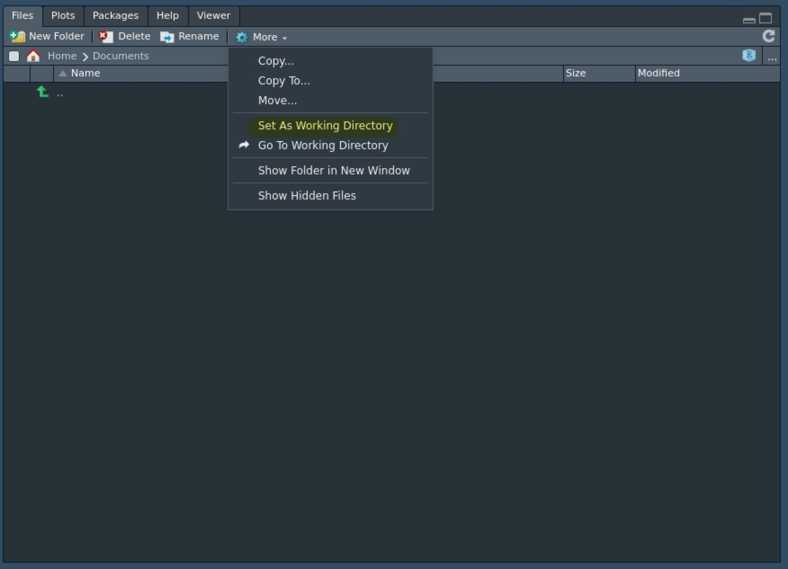
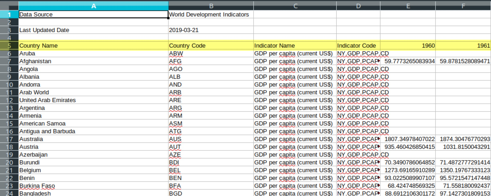
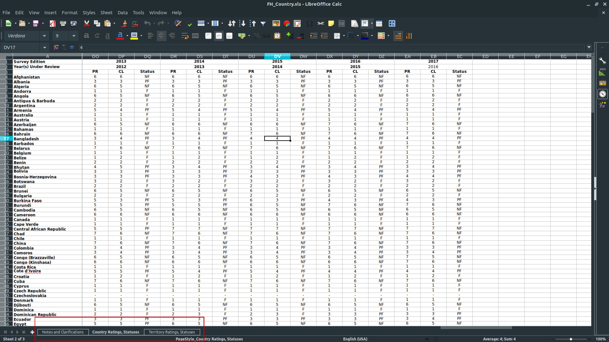
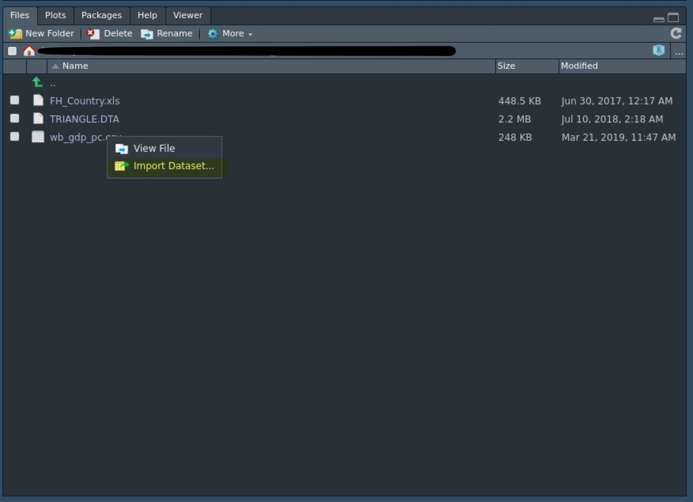
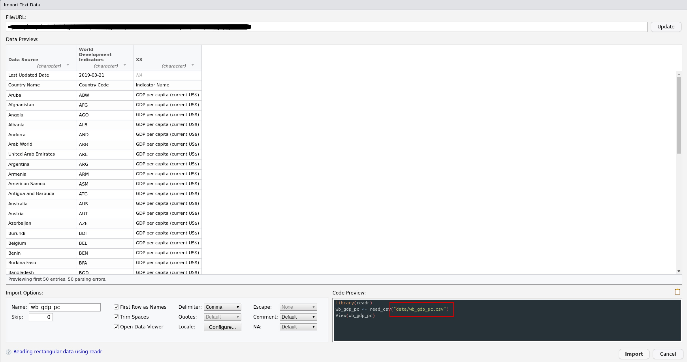

第1章 データの読み込み
統計分析をする際にはデータを読み込む（インポート）必要があります。 基本的にPCに保存されたデータのパスを入力することでデータを読み込みます。
- URLを入力することでオンラインのデータを読み込むこともできます。
ここでは、まずRやパッケージに付属のデータセットの読み込み方を解説し、統計分析でよく使われるデータ形式を紹介した後に、Rによる読み込み方を説明します。
## ── Attaching packages ─────────────────────────────────────────────────────────── tidyverse 1.3.0 ──## ✓ ggplot2 3.3.1 ✓ purrr 0.3.4
## ✓ tibble 3.0.1 ✓ dplyr 1.0.0
## ✓ tidyr 1.1.0 ✓ stringr 1.4.0
## ✓ readr 1.3.1 ✓ forcats 0.5.0## ── Conflicts ────────────────────────────────────────────────────────────── tidyverse_conflicts() ──
## x dplyr::filter() masks stats::filter()
## x dplyr::lag() masks stats::lag()1.1 パッケージ付属のデータ
Rは標準でいくつかのデータセットを持っており、またパッケージを読み込むと付属のデータセットも読み込みます。
data()に何も入力せずに実行すると、データセットの一覧が表示されます。
よく、使われるデータセットはフィッシャーのアヤメのデータセットで、irisという名前で保存されています。
head()は最初のいくつかの要素だけを表示する関数です（tail()は最後からいくつかを表示します）。
1.2 主なデータ形式*
大雑把に言ってしまうとPCのデータにはテキストデータとバイナリデータに分かれます。 さらにそれぞれ様々な種類の形式がありますが、拡張子によって判断します。
1.2.1 テキストデータ
テキストデータとは人間の理解できる文字列のデータのことです。
1.2.1.1 .txtファイル
.txtファイルは素のテキストデータになり、データの構造を含みません。
統計分析をする際には使いませんが、テキスト分析をする場合はしばしば遭遇します。
1.2.1.2 .csvファイル
統計分析で遭遇するテキストデータの大半は.csvファイルです。
これは“comma-separated values”の略で、各変数はカンマで区切られています。
各観察は改行で区切られています。
1.2.1.3 .tsvファイル
.tsvファイルはカンマの代わりにタブで変数が区切られているテキストデータになります。
1.2.1.4 .htmlファイル
.htmlファイルとはウェブサイトの内容を記述してあるファイルです。
ウェブスクレイピング（PCに自動でオンラインの情報を収集させること）をする際に使います。
1.2.2 バイナリデータ
バイナリデータとはPCは理解できるけど人間は特定のソフトを使わないと理解できないようなデータになっています。
1.2.2.1 .xls, .xlsxファイル
最も有名なのはExcelで使用される.xlsまたは.xlsxファイルでしょう。
.xlsxの方が.xlsよりも新しくて高圧縮らしいです。
1.2.2.2 .dtaファイル
.dtaファイルとはStataと呼ばれる統計分析ソフト専用のデータ形式になります。
Stataは政治学や経済学で人気のツールなのでレプリケーションデータなどはこの形式で配布されていることもあります。
1.2.2.3 .savファイル
.savファイルはStataよりも前に人気だった統計ソフト用のデータ形式です。
1.2.2.4 .rdsファイル
.rdsファイルとはR戦争のデータ形式になります。
あまり見かけることはありません。
1.2.3 Good bye, Excel!
基本的にはRでデータを読み込めば中身を見ることができるのですが、後述するようにRで読み込む前に生データを見たい場合はしばしばあります。
そのときにMicrosoft OfficeのExcelを使うのはあまりおすすめしません。 なぜなら、
- Officeは高い
- 文字エンコードを指定できない
からです。
特に後者の問題は重要だと思います。 例えば日本語を含むデータの場合、Windowsで作成されたものをLinuxやMacで開くと、あるいはその逆をすると文字化けを起こすからです。
そこで、LibreOfficeという無料のオフィスソフトをダウンロードし、その中のCalcを使用することをおすすめします。 LibreOffice Calcであればファイルを開く際にエンコードを選択できるので文字化けすることはありません。
- Windowsで文字けする場合、エンコードを
UTF-8にする。 - Linux, Macで文字化けする場合、エンコードを
Shift-JISあるいはCP932にする。- もちろん、LibreOfficeでMicrosoft Officeのデータを開くことは可能です。
- ただし、LibreOfficをインストールするとMicrosoft Officeが正常に動作しないことがあるかもしれません。
1.3 パスと作業ディレクトリ
一般的に、PCのデータはファイルと呼ばれ、ファイルを入れておく箱のようなものをフォルダ（ディレクトリ）と呼びます。
例えば、Windowsの場合、documentsやpicturesというフォルダがあり、その中にWordファイルや画像データが入っていると思います。
なお、ファイルの名前の末尾には.から始まる拡張子がついています。
例えば、Wordファイルであれば.docx、画像データであれば.pngや.jpgなどです。
これはそのファイルがどのような種類のもので、PCがどのように処理をすればいいのかを示す目印になっています。
- もし、PCで拡張子が表示されていない場合は表示するように設定しましょう。
1.3.1 パス
ファイルやフォルダにアクセスする場合、パスと呼ばれるPC上の住所のようなもので指定する必要があります。
例えば、Windowsの場合、documentsフォルダの中のsample.docxというファイルのパスはC:/Users/Shohei/Documents/sample.docxとなります。
- 正確には、Windowsでは
/ではなく円マークになっていると思います。
1.3.1.1 絶対パス
このパスの意味はCドライブの中のUserというフォルダの中のShoheiというフォルダの中のDocumentsというフォルダの中にあるsample.docxという意味です。
このように始点（Windowsの場合はCドライブ）から始めるパスを絶対パスと呼びます。
1.3.1.2 相対パス
しかし、毎回、絶対パスを書くのは面倒ですし、コードを公開する際にはやや恥ずかしい嫌いもあります。
そこで、途中から書かれるパスを相対パスと呼びます。
例えば、Shoheiというフォルダから見れば、上記のファイルはDocuments/sample.docxとして指定することができます。
1.3.1.3 パスに関する注意点
必ずしも直ちに問題があるわけではないですが、パスに日本語や空白があるとうまく行かないことがあります。 なので、フォルダ名やファイル名はアルファベットで空白を入れない方がいいでしょう。
- もしユーザー名が日本語である場合、パス関連でエラーが出る場合はRStudio Cloudを使うか、これを機にOSをクリーンインストールをしてしまうのもありでしょう。
1.3.2 作業ディレクトリ
相対パスでファイルなどを指定する際には出発点となるフォルダを決める必要があります。 これを作業ディレクトリと呼びます。
Rではgetwd()（“get working directory”の略）で現在の作業ディレクトリを確認できます。
また、setwd()に適当なパスを入力することで作業ディレクトリを設定することもできます。
RStudioの場合はFilesパネルの中のMore > Set As Working Directoryで現在開いているフォルダを作業ディレクトリに指定することもできます。

ただし、作業ディレクトリを指定するよりも、Rプロジェクトを作成するのがベターです。
1.4 .csvファイルの読み込み
ここでは、例として世界銀行の各国の一人あたりGDPデータを読み込んでみます。
今回は適当に作成したプロジェクト・フォルダの中にdataというフォルダを作成し、その中にwb_gdp_pc.csvというデータを保存してください。
ここでは、tidyverseの中のreadrのread_csv()という関数を使います。
- Rの標準関数は
read.csv()です（_と.が違います）。
## Warning: Missing column names filled in: 'X3' [3]## Parsed with column specification:
## cols(
## `Data Source` = col_character(),
## `World Development Indicators` = col_character(),
## X3 = col_character()
## )## Warning: 265 parsing failures.
## row col expected actual file
## 2 -- 3 columns 64 columns 'data/wb_gdp_pc.csv'
## 3 -- 3 columns 64 columns 'data/wb_gdp_pc.csv'
## 4 -- 3 columns 64 columns 'data/wb_gdp_pc.csv'
## 5 -- 3 columns 64 columns 'data/wb_gdp_pc.csv'
## 6 -- 3 columns 64 columns 'data/wb_gdp_pc.csv'
## ... ... ......... .......... ....................
## See problems(...) for more details.データを読み込む際には()の中に読み込みたいデータのパスを入力する必要があります。
したがって、プロジェクト・フォルダから見たデータの相対パスはdata/wb_gdp_pc.csvとなります。
- パスをクオーテーションマーク
"で囲むことを忘れないでください。 - パスの頭に
/はいりません。 - パスの最後に拡張子を付けることを忘れすに。
読み込んだデータもオブジェクトなので適当な名前をつけて代入する必要があります。 データの名前は
- 打ち込むのがめんどくさくない程度に短く
- 他人や数カ月後の自分が見ても分かる程度には意味の分かる
ようにするのがコツです。
さて、データを無事読み込めるとEnvironmentパネルにgdp_pcが表示されていると思います。
1.4.1 変数名の適切な読み込み
これで一安心と思いきや、Warningという不吉な文字列が見えます。
Environmentパネルをよく見ると変数の数が3つしかないということがわかります。
そこで、データを見てみると、なにかおかしいことが起こっているようです。
WarningとはErrorのように実行できないほどではないけれど、なんか問題があるかもしれない場合に表示されます。Warningが出たときは問題がないのか確認しましょう。
このような場合はLibreOffice Calcで元データを見てみましょう。

実はread_csv()ではデフォルトでは第1行目を変数名として読み込む設定になっています。
なので、元データのData SourceとWorld Development Indicatorsを変数名として認識してしまったようです。
- では、なぜ三番目も変数として認識されているのかはよく分かりません。
変数名は第5行目なので、単純な方法は第1行目から第4行目を削除してしまうことですが、そうすべきではない理由がいくつかあります。
- 新しい年のデータを使うときに同じ操作をしないといけない。
- 同じ形式のデータを使うときに同じ操作をしないといけない。
- 第三者が元データからレプリケートするときに気付かないかもしれない。
ということで、第5行目からデータとして読み込めないか確かめるためにヘルプを見ます。
すると、このような記述が見つかります。
skip Number of lines to skip before reading data.ということで、オプションとしてskip=4を設定して読み込むとうまく行きました
## Warning: Missing column names filled in: 'X64' [64]## Parsed with column specification:
## cols(
## .default = col_double(),
## `Country Name` = col_character(),
## `Country Code` = col_character(),
## `Indicator Name` = col_character(),
## `Indicator Code` = col_character(),
## `2018` = col_logical(),
## X64 = col_logical()
## )## See spec(...) for full column specifications.- ちなみに
NAとはRにおける欠損値 (missing value) のことです。
なお、実はこのように時間（この場合は年）が横方向に進んでいくデータをワイド形式と呼び、大抵の場合はこのままでは分析できないのでロング形式にする必要があります。
1.5 .xls[x]ファイルの読み込み
実はtidyverseはいくつかのパッケージをまとめたものになっています。
これまでテキストデータの読み込みに使っていたのは、その中のreadrというパッケージになります。
バイナリデータを読み込むには別途パッケージを使う必要があり、.xls[x]ファイルの場合は以下のものになります。
.xlsか.xslxか分かっている場合はread_xls()もしくはread_xlsx()の適切な方を使い、分からない場合はread_excel()を使います。
ここではFreedom Houseのデータセットを読み込みます。
1.5.1 シートの選択
Environmentパネルにfhがあるので一安心と思いきや、変数の数が1つと明らかにおかしいので、Rでデータを見て、LibreOffice Calcで開いてみます。

すると、全くデータが異なっていることがわかります。 実はエクセルのデータにはシートという概念があり、異なるデータを一つにまとめることができます。
LibreOffice Calcの左下をよく見ると二番目のシートが選択されていることがわかります。 そしてその左の一番目のシートを選択するとRで読み込まれたものと同じものがあることがわかります。
つまり、先程は自動で一番目のシートを読み込んでしまっていたということで、オプションで二番目のシートを読み込まないといけないわけでした。
そこでヘルプを見るとsheetというオプションがあるので、sheet=2とするとちゃんとほしいデータを読み込んでくれます。
## New names:
## * `` -> ...3
## * `` -> ...4
## * `` -> ...6
## * `` -> ...7
## * `` -> ...9
## * ...1.5.2 変数名の適切な読み込み (again)
これで一安心かと思いきや、そうではありません。
よくみると変数名が適切に選択されていないので、先ほどと同様にskipを設定する必要があります。
## New names:
## * `` -> ...1
## * PR -> PR...2
## * CL -> CL...3
## * Status -> Status...4
## * PR -> PR...5
## * ...1.5.3 欠損値の処理
残念ながら問題はまだ残っています。
head()でデータの冒頭を見たときに変数名の下に<chr>とあるのに注目してください。
これは、当該変数が文字列 (character) であることを意味しています。
国名やステータスが文字列なのは当然として、本来数値データのはずのPR (political rights) やCL (civil liberty) も文字列データになっています。
元データを見てみると、ところどころ-という記号が含まれていることがわかります。
実はこれはFreedom Houseのデータセットにおける欠損値なのですが、Rではデフォルトでは空欄を欠損値として認識します。
そこで、やはりヘルプを見てnaを設定して-も欠損値として読み込むようにします。
## New names:
## * `` -> ...1
## * PR -> PR...2
## * CL -> CL...3
## * Status -> Status...4
## * PR -> PR...5
## * ...実は文字列のままのPRやCLもあるのですが、そこはややこしいので今回は見なかったことにします。
1.6 .dtaファイルの読み込み
.xls[x]ファイルと同様.dtaファイルもバイナリデータなので専用のパッケージを読み込みます。
ここでは、Bruce Russett and John R. Oneal (2001) “Triangulating Peace” のレプリケーションデータ（とされるもの）を読み込みます。
ハッピーなことにStataのデータはそもそも統計分析用に加工されているので、特に面倒くさい手続きをする必要はありません。
1.7 .rdsファイルの読み込み
R専用のバイナリデータの形式は.rdsなので、write_rds()で書き出し、read_rds()で読み込むことができます。
1.8 パス入力の省略*
データを読み込む際にいちいちパスを打ち込むのは面倒です。
そこで、右下のFilesパネルで読み込みたいデータをクリックするとImport Dataset...というのがあるのでクリックします。

すると次のような画面が出てきますが、右下にデータを読み込むためのパッケージ、関数、パスが表示されるので、関数とパスの部分をコピペしてしまうと楽です。

オブジェクト名の部分は自動的に決まるので、もとのデータの名前が長いとオブジェクト名も長くなり、かっこよくないので自分で設定するようにしたほうがよいでしょう。
また、データのプレビューも可能なのでここでskipなどの設定をすることも可能です。
1.9 データの書き出し
データを書き出す際には、基本的に.csvファイルでよいと思うので、write_excel_csv()に保存したいオブジェクト名とパスを入れておきましょう。
ここでは試しにTriangulating Peaceのデータを保存してみます。
指定したパスに新しくファイルができていることを確認してください。
Triangulating Peaceデータの.csvファイルと.dtaファイルの容量を見ると.dtaファイルのほうが小さいことがわかります。
この程度では問題ありませんがデータがあまりにも大きくなる場合はバイナリデータで保存したほうがよいでしょう。
1.10 データフレームの作成
自ら手打ちでデータフレームをdata.frame()によって作成することができます。
同様のデータフレームはベクトルからも作れます。
基本的にデータフレームを作成するときのベクトルは同じ長さでないといけませんが、長さが1の場合はすべての観察に同じ値の変数にになります。
- すべての観察で大国を表す
majorが1になっています。
tidyverseではdata.frame()の代わりにtibble()を使います。